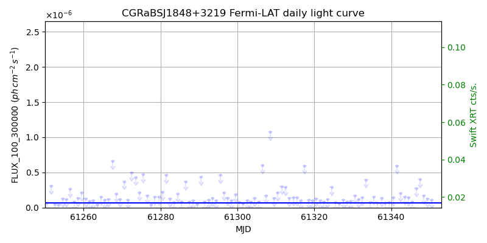
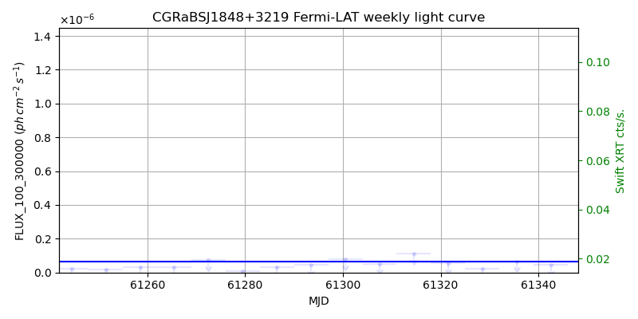
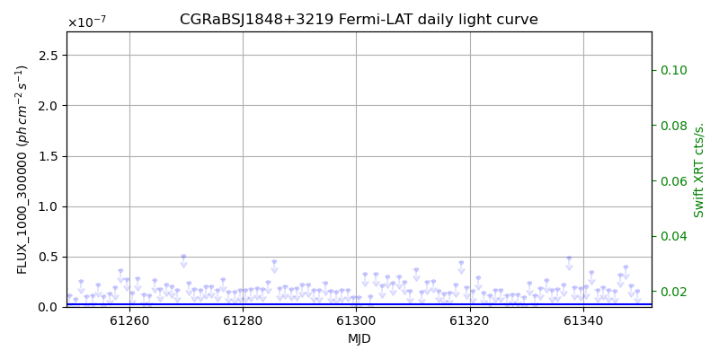
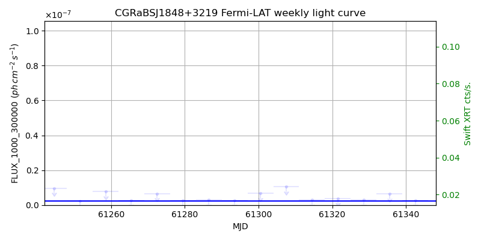

LAT Lightcurve site: https://fermi.gsfc.nasa.gov/ssc/data/access/lat/msl_lc/source/CGRaBS_J1848p3219
Swift site: https://www.swift.psu.edu/monitoring/source.php?source=CGRaBSJ1848+3219
NED: Query
Time of last update of this page: UT: 2026-11-06 16:24 (MJD: 61350.684)
| Property | Value |
|---|---|
| R.A. | 18:48:22.08 |
| Dec. | 32:19:01.2 |
| z | 0.798 |
| 3FGL SpectrumType | PowerLaw |
| 3FGL PL Index | 2.41 |
| 3FGL Flux_100_300000 | 6.29e-08 1 / (s cm2) |
| 3FGL Flux_1000_300000 | 2.44e-09 1 / (s cm2) |
| 3FGL Flux >200 GeV | 1.38e-12 1 / (s cm2) |
| 3FGL Extrap. Crab >200 GeV | 0.01 |
| 3FGL Flux After EBL Absorption >200GeV | 5.41e-14 1 / (s cm2) |
| 3FGL EBL Crab Fraction >200GeV | 0.00 |

| MJD | dMJD | Flux | dFlux | Frac3FGL | FracCrab>200GeV | EBLFracCrab>200GeV |
|---|---|---|---|---|---|---|
| 61345.50 | 0.50 | 8.21e-08 | 0.00e+00 | 0.00 | 0.00 | 0.00 |
| 61346.50 | 0.50 | 2.72e-07 | 0.00e+00 | 0.00 | 0.00 | 0.00 |
| 61347.50 | 0.50 | 4.04e-07 | 0.00e+00 | 0.00 | 0.00 | 0.00 |
| 61348.50 | 0.50 | 1.69e-07 | 0.00e+00 | 0.00 | 0.00 | 0.00 |
| 61349.50 | 0.50 | 1.24e-07 | 0.00e+00 | 0.00 | 0.00 | 0.00 |

| MJD | dMJD | Flux | dFlux | Frac3FGL | FracCrab>200GeV | EBLFracCrab>200GeV |
|---|---|---|---|---|---|---|
| 61314.50 | 3.50 | 1.13e-07 | 0.00e+00 | 0.00 | 0.00 | 0.00 |
| 61321.50 | 3.50 | 5.48e-08 | 0.00e+00 | 0.00 | 0.00 | 0.00 |
| 61328.50 | 3.50 | 2.28e-08 | 0.00e+00 | 0.00 | 0.00 | 0.00 |
| 61335.50 | 3.50 | 6.66e-08 | 0.00e+00 | 0.00 | 0.00 | 0.00 |
| 61342.50 | 3.50 | 4.63e-08 | 0.00e+00 | 0.00 | 0.00 | 0.00 |

| MJD | dMJD | Flux | dFlux | Frac3FGL | FracCrab>200GeV | EBLFracCrab>200GeV |
|---|---|---|---|---|---|---|
| 61345.50 | 0.50 | 1.59e-08 | 0.00e+00 | 0.00 | 0.00 | 0.00 |
| 61346.50 | 0.50 | 3.17e-08 | 0.00e+00 | 0.00 | 0.00 | 0.00 |
| 61347.50 | 0.50 | 3.98e-08 | 0.00e+00 | 0.00 | 0.00 | 0.00 |
| 61348.50 | 0.50 | 2.15e-08 | 0.00e+00 | 0.00 | 0.00 | 0.00 |
| 61349.50 | 0.50 | 1.57e-08 | 0.00e+00 | 0.00 | 0.00 | 0.00 |

| MJD | dMJD | Flux | dFlux | Frac3FGL | FracCrab>200GeV | EBLFracCrab>200GeV |
|---|---|---|---|---|---|---|
| 61314.50 | 3.50 | 3.03e-09 | 0.00e+00 | 0.00 | 0.00 | 0.00 |
| 61321.50 | 3.50 | 3.77e-09 | 0.00e+00 | 0.00 | 0.00 | 0.00 |
| 61328.50 | 3.50 | 2.95e-09 | 0.00e+00 | 0.00 | 0.00 | 0.00 |
| 61335.50 | 3.50 | 6.29e-09 | 0.00e+00 | 0.00 | 0.00 | 0.00 |
| 61342.50 | 3.50 | 2.75e-09 | 0.00e+00 | 0.00 | 0.00 | 0.00 |
--------------------------------------------------------- Using user-supplied coords: 18:48:22.08 32:19:01.2 2000 --------------------------------------------------------- FLWO UT night of: 2026-11-07 Local Sid. @ Midnight: 02:42 Sunset (-15.0) (local, UT): 18:39 01:39 Sunrise (-15.0) (local, UT): 05:36 12:36 Moonrise (local, UT): 05:16 12:16 Moonset (local, UT): Moon phase: 0.04 --------------------------------------------------------- AzTime LSID UT Obj_el Obj_az Mn_el Mn_az Sep. --------------------------------------------------------- 18:39 21:20 01:39 58.2 281.4 -35.5 278.9 93.7 19:09 21:50 02:09 51.9 283.4 -41.6 283.5 93.5 19:39 22:20 02:39 45.7 285.5 -47.5 288.8 93.3 20:09 22:50 03:09 39.6 287.8 -53.3 295.3 93.1 20:39 23:20 03:39 33.6 290.2 -58.7 303.4 92.9 21:09 23:50 04:09 27.6 292.8 -63.5 313.9 92.6 21:39 00:20 04:39 21.8 295.5 -67.5 328.0 92.4 22:09 00:50 05:09 16.1 298.5 -70.0 346.2 92.2 22:39 01:20 05:39 10.6 301.7 -70.5 6.9 92.0 23:09 01:51 06:09 5.3 305.1 -68.8 26.6 91.7 23:39 02:21 06:39 0.5 308.9 -65.4 42.5 91.5 00:09 02:51 07:09 -3.8 313.0 -60.9 54.4 91.3 00:39 03:21 07:39 -9.3 317.6 -55.8 63.5 91.1 01:09 03:51 08:09 -13.4 322.5 -50.2 70.6 90.9 01:39 04:21 08:39 -17.1 327.9 -44.4 76.4 90.7 02:09 04:51 09:09 -20.2 333.7 -38.4 81.4 90.5 02:39 05:21 09:39 -22.7 340.0 -32.4 85.8 90.3 03:09 05:51 10:09 -24.5 346.6 -26.3 89.9 90.2 03:39 06:21 10:39 -25.6 353.5 -20.2 93.7 90.0 04:09 06:51 11:09 -26.0 0.6 -14.2 97.5 89.9 04:39 07:21 11:39 -25.5 7.6 -8.1 101.2 89.7 05:09 07:52 12:09 -24.3 14.5 -1.2 105.0 89.6 05:36 08:19 12:36 -22.5 20.5 3.4 108.6 89.5 --------------------------------------------------------- Dark hours >55 deg.: 0.25 srcstart (UT): 2026-11-07 01:38 srcend (UT): 2026-11-07 01:54